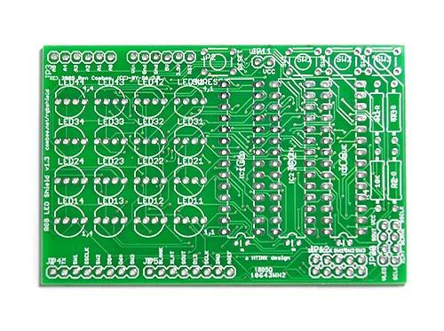

This Arduino-compatible shield uses three TI TLC5940 PWM LED driver ships to drive a 4x4 array of RGB LEDs. Each color is controlled by a different chip so you can adjust the reference resistors for the appropriate current. This also includes mounting positions for for three general-purpose buttons that are connected to ground, and a reset button. The TLC5940 chips are not directly connected to any Arduino pins, but a header is provided for you to make a manual connection depending on the needs of your sketch.
This board is a version of the circuit used at the first HTINK workshop on March 14th, 2009 at Bug Labs in New York City.
The best library I've seen for interfacing with the TLC5940 chips used in this shield is the tlc5940arduino library. We used it in the HTINK class and it performed very well.
On the shield, the four LEDs at the corners are labeled with their X,Y coordinates: "1,1", "1,4", "4,1", and "4,4". The formula to turn a coordinate into a LED number is (X - 1 + (Y - 1) * 4).

Version 1.3 This version has some major changes from the never-build 1.2 board. The GSCLK, BLANK, and XLAT signals are now all hard-wired to Arduino pins D3, D10, and D9 respectively. This is because the TLC5940 library uses those pins for their special timer properties, so they can't be reassigned. However, with the space savings from removing those from the jumper block, I've added an 2x4 output header that allows chaining a second board to the first one, with all the TLC5940 control pins, power, and ground provided..

This version also eliminates the extra holes that were provided to wire up signals and replaces them with silkscreen labels for the Arduino signals. It also moves all of the resistors to the edge of the board, making it easy to hook up potentiometers to figure out the brightness settings for each channel, and it labels the ICs and resistors with the color channel they control.
http://combee.net/rgbshield/RGB_LED_Shield_1.3.zip - includes schematic, board image, and design files for Eagle CAD
Author: Ben combee Project Link: http://combee.net/rgbshield/
Source Files: [click to download]
Fetch here: http://www.seeedstudio.com/depot/arduinocompatible-rgb-led-shield-pcb-v14-p-342.html
Copyright (c) 2008-2016 Seeed Development Limited (www.seeedstudio.com / www.seeed.cc)